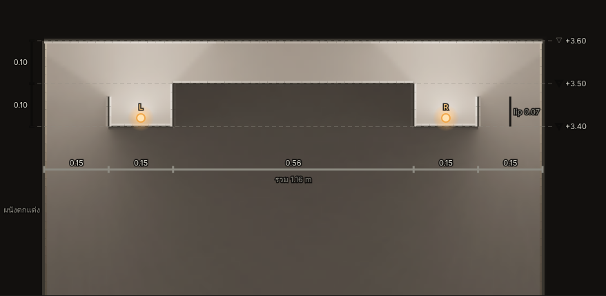
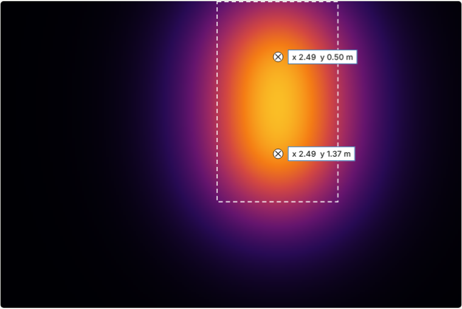

Cove Light Simulation · Section B (A8-01)
จำลองแสงซ่อน LED strip ในฝ้าตกแต่งแบบ 2D ray-tracing ลากตำแหน่ง LED และปรับขนาด cove ดู lux บนผนัง ฝ้า พื้น พร้อม elevation ผนังซ้าย
เปิด simulation →

Exam Room 1 · Two-Light Lux Map
แผนที่ lux บนโต๊ะตรวจ จากไฟ downlight 2 ดวง (GU10 550 lm, beam 36°, ฝ้า 2.8 m) ลากไฟเพื่อดู min / avg / max และความสม่ำเสมอ
เปิดหน้า lux map →